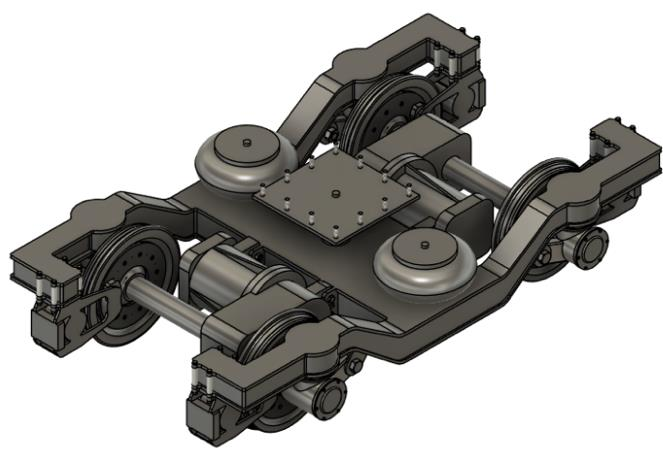
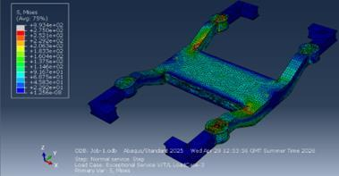
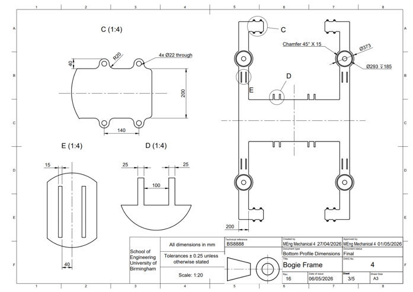

← Past projects
02 / Rail / Interdisciplinary design
Train bogie with regenerative braking
Past projectIn a large interdisciplinary engineering team, design a train for Poland’s line 104

Specifications
- In a large interdisciplinary engineering team, design a train for Poland’s line 104
- Group tasked with designing the bogie, aiming to improve performance and decrease environmental impact
Contributions
- Focused on implementing regenerative braking and improved wheel profile
- Created CAD of bogie and iteratively designed the frame with FEA to meet EU standards
- Created drawings to BS 8888 standards with parts list including outsourcing materials
- Designed for manufacturing with EN-grade materials and routing sheets for forging, casting and welding.
Outcomes & Lessons Learnt
- Researched components that could be outsourced for assembly which made the business strategy more achievable by avoiding unnecessary in-house manufacturing
- Product design specification gave standards, but needed to be better quantified so that a comparison could be made with final design

